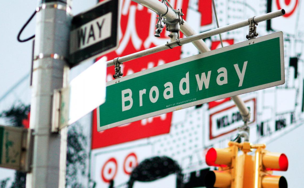

Monica Geller
Ross, Rachel, Mônica, Chandler, Joey e Phoebe formam um grupo de seis amigos que lutam para se sobressair e progredir na competitiva vida de Manhattan. Seu humor inteligente e apoio mútuo incondicional fazem com sua amizade seja cada vez mais forte, superando assim todos os obstáculos que a vida lhes apresenta. Trabalho, família, responsabilidade, dinheiro, sexo, compromisso e, sobretudo, amor e amizade, são alguns dos temas que preocupam e, ás vezes, divertem esses personagens. Não foi à toa que o sofá do Central Perk, o café onde se reúnem para conversar, foi trocado duas vezes por excesso de uso. Esta série foi filmada por dez temporadas, conquistando um sucesso após o outro. Sua trilha sonora promocional, "I'll Be There for You" (Rembrandts), é tão famosa quanto o programa, pois a sua mensagem e o refrão definem perfeitamente o significado da existência da série.
Vai viajar para Nova York e é super fâ da série Friends?
Aqui reunimos os melhores lugares para quem quer relembram um pouco da série mais amada pelo público dos anos. Se liga pois reunímos lugares imperdíveis pra você conhecer e matar a saudade da séries.
O apartamento do Friends está localizado na charmosa região de West Village.
O prédio é residencial e não é aberto para visitação. No térreo do prédio, o restaurante de fachada vermelha é o The Little Owl, de culinária mediterrânea.
90 Bedford St.
Metrô - linhas (A), (C), (E) até West 4 St. Washington Sq.

Fundado em 1869, o museu tem localização privilegiada, já que sua entrada principal fica na Central Park West, que é a avenida que percorre todo o lado oeste do parque mais famoso do mundo.
As exposições estão distribuídas pelos cinco 5 andares do museu, incluindo o subsolo (Lower Level). O museu conta com 45 exposições permanentes, dentre elas:
A Broadway é um bulevar cheio de teatros com musicais e obras espetaculares. A avenida também é famosa por ser a única rua que corta o centro de Manhattan obliquamente.
Há três tipos de espetáculos: On-Broadway, Off-Broadway e Off-Off-Broadway. Você pode entender pelo nome tanto a categoria como a situação do espetáculo. Os primeiros costumam ser referência mundial e estão situados na própria Avenida Broadway ou nas imediações, enquanto os outros são produções de menor cachê.

Rachel Greene
Esta é a loja de departamentos em que Rachel trabalhou antes de entrar para a Ralph Lauren, e onde iniciou sua carreira na moda.
Ela deixa de servir café no Central Perk e passa a trabalhar como assistente de compras na Bloomingdale’s.
O bom é que você pode aproveitar para comprar umas coisinhas por lá também, mas saiba que aos produtos por ali são bem caros…
Se mesmo assim você quiser uma experiência Friends completa e pretende pelo menos tirar umas fotos em todos os pontos possíveis, a Bloomingdale’s fica em East Midtown, Manhattan na esquina da 3rd Avenue com a 59th Street.
Chandler Bing
Mesmo assistindo todos os episódios de todas as temporadas, você provavelmente não conseguiria dizer o quê, exatamente, Chandler faz, qual sua ocupação.
Não vale dizer que ele ‘processa dados’. Porém, você certamente reconheceria o prédio onde ele trabalha, uma vez que ele apareceu algumas vezes ao longo da série.
Ele está localizado entre a loja de departamentos Bergdorf Goodman e o Plaza Hotel, na West 57th Street.
O edifício se chama Solow Building e sua incrível fachada oferece uma bela contribuição visual para a paisagem urbana de Manhattan.
Uma torre de vidro reluzente é, sem dúvida, um espetáculo à parte e vale um pouquinho da sua atenção durante a uma visita a New York.
Um cenário de Friends em Nova York que vale muito a visita para amantes de arquitetura!
Pensar em ícones da Big Apple é também lembrar do táxi amarelo em Nova York. São mais de 10.000 servindo a cidade, contribuindo para o tráfego insuportável, resultando, daí uma relação de amor e ódio entre os nova-iorquinos e a avalanche de táxis circulando nas ruas.
Além da caracterização e identificação com a cidade, eles têm uma enorme importância para o dia a dia dos moradores da cidade e dos turistas. Com o problema do alto custo de estacionamento em Nova York, quem não quer utilizar o eficiente sistema de transporte público, tem que apelar para os táxis para deslocamento entre grande distâncias.
Quanto custa a corrida do John F. Kennedy Airport (JFK) para Manhattan por exemplo?
A corrida custa US$52 (tarifa fixa) mais US$0.50 (imposto) mais US$ 5.33 (pedágio) mais US$7 (gorjeta de 15 a 20%). Caso a corrida tenha duas paradas, o valor de US$52 será até a primeira parada, depois será cobrada pelo taxímetro.